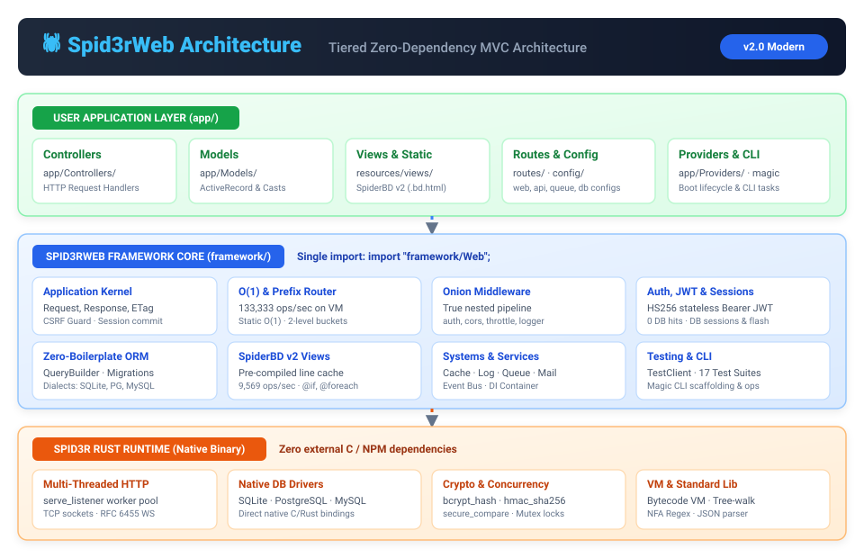
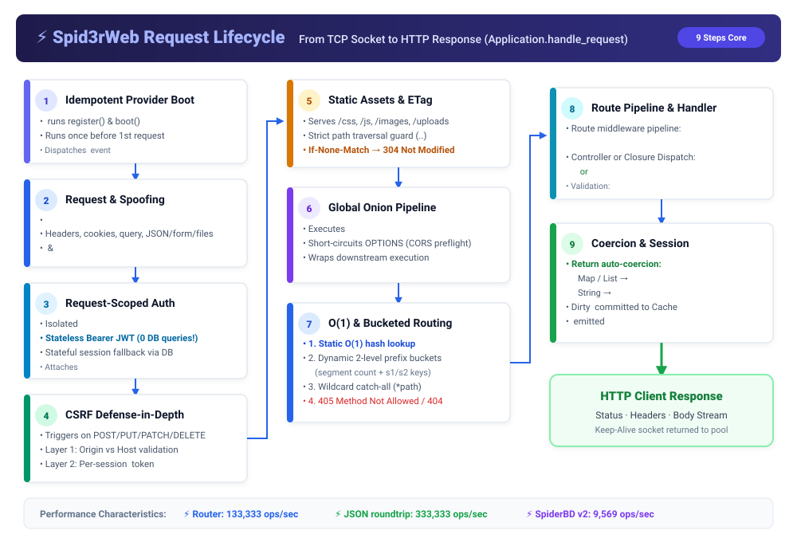
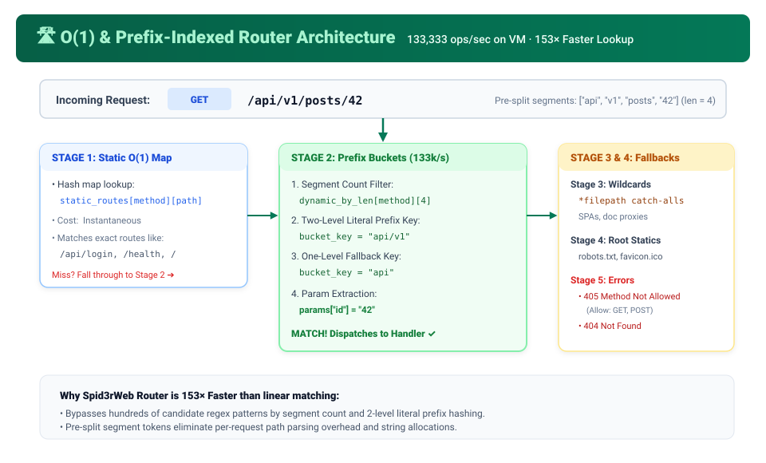
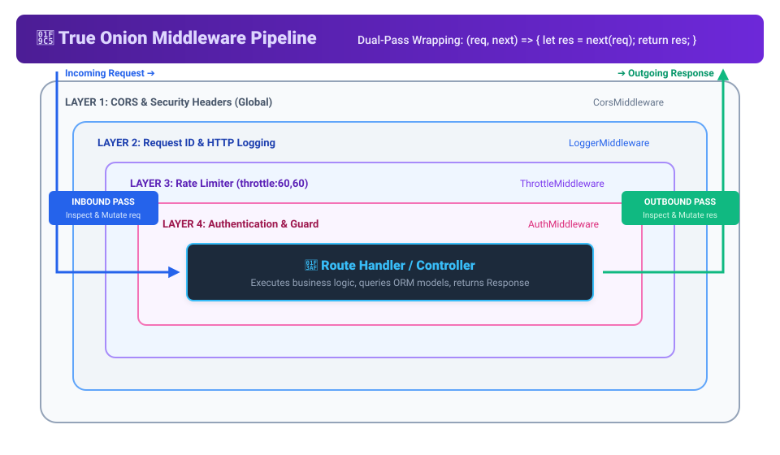
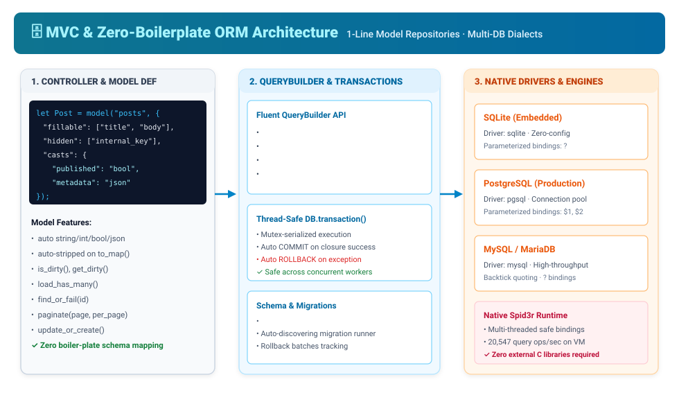
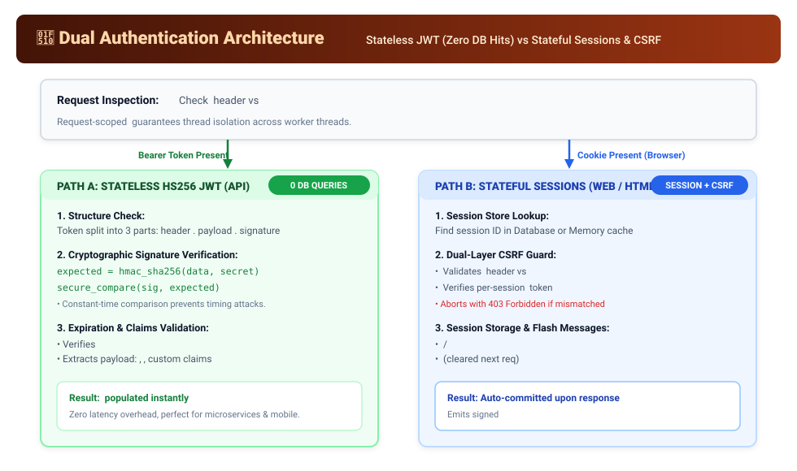

🕷️ Spid3rWeb Developer Documentation
Spid3rWeb is a modern, lightweight, high-performance full-stack MVC framework for the Spid3r programming language — combining Express/Fastify-style routing ergonomics with zero-boilerplate Active Record models, an O(1) + prefix-indexed router, a true Onion middleware pipeline, stateless JWT & session auth, SpiderBD v2 templates, and a fluent integration TestClient, all with zero external dependencies.
Single-Import DX
Import "framework/Web" once to access web(), model(), router(), route(), abort(), db(), schema(), auth(), jwt(), cache(), and test_client().
133k ops/sec Router
O(1) hash lookup for static routes, 2-level segment & prefix indexing for :param / {param} routes, *wildcard catch-alls, sub-router mount(), and named route() URL generation.
True Onion Middleware
Write (req, next) => { let res = next(req); ... return res; } closures or classes. Includes auth, guest, cors, logger, etag, request_id, and throttle.
1-Line Models & Casts
Define models in 1 line with model("posts", opts): automatic bool/int/float/json casts, hidden field stripping, dirty tracking, find_or_fail(), and batched eager loading.
1-Line Validation
req.validate_or_fail(rules) validates and coerces inputs to native int/float/bool types, or automatically aborts with a 422 Unprocessable Entity response.
Stateless JWT + Sessions
Zero-DB-query HS256 Jwt.sign / Jwt.verify Bearer authentication alongside CSPRNG DB sessions, HMAC-signed cookies, and req.session() flash messages.
SpiderBD v2 Views
Pre-compiled template line cache with file_mtime invalidation, rich @if(a == b and c >= 10) / @elif expressions, loop metadata in @foreach, @csrf, and @method('PUT').
Fluent TestClient
Test your entire HTTP stack in-memory without opening sockets: app.test_client().acting_as(user).post_json(...).assert_created().assert_json_path(...).
Architecture & Technical Diagrams
Visual schematics illustrating Spid3rWeb's zero-dependency runtime layers, request flow, router matching, onion middleware wrapping, ORM persistence, and dual authentication.

Layer Breakdown: User application code (app/) builds on top of the Spid3rWeb framework core (framework/), which communicates directly with Spid3r's native multi-threaded HTTP/1.1 socket pool, cryptographic primitives, and native database drivers without third-party C or NPM packages.
Request Lifecycle
9-step end-to-end processing pipeline from TCP connection to keep-alive response.
Onion Middleware
Dual-pass (req, next) => next(req) pipeline wrapping controller execution.
O(1) & Prefix Router
133,333 ops/sec routing pipeline with static hash lookup and 2-level prefix buckets.
MVC & ORM Architecture
1-line models, auto type casting, dirty tracking, QueryBuilder, and native drivers.
Dual Auth & CSRF
Zero-DB stateless HS256 JWT validation alongside session cookies and CSRF guards.
Diagrams Directory
Browse standalone SVGs, editable Mermaid source files, and developer specifications.
Single-Import Barrel (framework/Web)
Spid3r imports are explicit and non-transitive. Instead of importing 8 separate files in every script, import "framework/Web" to get factory functions and subsystem accessors in one line:
import "framework/Web";
let app = web();
// 1-line model repository with automatic type casting & hidden fields
let Post = model("posts", {
"fillable": ["title", "body", "published", "meta"],
"hidden": ["secret_token"],
"casts": {"published": "bool", "meta": "json"}
});
// Return a map or list directly -> auto-serialized as 200 application/json
app.get("/api/posts", req => {
return Post.latest().paginate(req.page(), req.per_page());
});
// Automatic 404 JSON/HTML when record is missing via find_or_fail()
app.get("/api/posts/:id", req => {
return Post.find_or_fail(req.int("id")).to_map();
}).name("posts.show");
// Express-style (req, res) handler + 1-line validate_or_fail()
app.post("/api/posts", (req, res) => {
let data = req.validate_or_fail({
"title": "required|min:3|max:200",
"body": "required|min:10",
"published": "nullable|bool"
});
let post = Post.create(data);
return res.status(201).json(post.to_map());
}).middleware(["auth", "throttle:60,60"]);
app.listen(8000);Tech Stack
Spid3rWeb runs entirely on the Spid3r v1.0.0 runtime — zero external dependencies.
| Layer | Provides |
|---|---|
| Spid3r Runtime (Rust) | Multi-threaded HTTP/1.1 serve_listener worker pool, TCP sockets, RFC 6455 WebSocket (ws_*), SQLite / MySQL / PostgreSQL native drivers, bcrypt, SHA-256 / HMAC-SHA256 / constant-time secure_compare, mutex, Thompson NFA regex, JSON parser/writer |
Spid3rWeb Framework (framework/) | Single-import barrel (Web), MVC lifecycle (Application), O(1) + prefix-indexed Router, true Onion Middleware pipeline, zero-boilerplate ORM (DB / QueryBuilder / Schema / Model / ModelRepository), Validator with type coercion, Auth + stateless Jwt, SessionStore + flash, thread-safe Cache & Log, Storage, Mail, Queue, SpiderBD v2 (BD), ServiceContainer, Event bus, TestClient, Magic CLI, and auto-discovering TestRunner |
Project Structure
app/ Your application code — Controllers, Models, Middleware, Providers
benchmarks/ Micro-benchmarks (bench.matrix) + recorded results (RESULTS.md)
config/ app, auth, session, cache, database, filesystems, logging, mail, queue, services
database/ migrations/ (auto-discovered) + seeders/
deploy/ Dockerfile + docker-compose.yml
docs/ ARCHITECTURE.md (technical reference) + developer-docs.html
examples/ task-api/main.matrix — runnable full-stack MVC example
framework/ Framework core (Web.matrix barrel, Application, Router, Middleware, ORM, Views, Auth, Jwt, Session, Testing, CLI)
public/ Static assets — /css/, /js/, /images/, /fonts/, /uploads/
resources/ SpiderBD v2 templates (.bd.html)
routes/ web.matrix (pages) · api.matrix (APIs) · queue.matrix (job handlers)
storage/ Runtime artifacts: logs, cache, uploads
tests/ 17 automated test suites — auto-discovered by `spid3r magic test`
tools/ Maintenance scripts (resync.matrix rebuilds the migration registry)
install.sh One-line project + toolchain setup
magic CLI entrypoint — `spid3r magic serve | test | migrate | ...`
server.matrix Production server entrypoint
spider.toml Package manifestInstallation & Setup
One command (Linux / macOS / Windows Git Bash) installs the Spid3r language if missing, then prepares the project:
sh install.sh // set up the project
sh install.sh --serve // ...and start the dev server immediatelyIf Spid3r is already installed:
spid3r magic key:generate // generate a 256-bit APP_KEY in .env
spid3r magic migrate // create the schema (users, sessions, jobs)
spid3r magic db:seed // optional — run database seeders
spid3r magic serve // http://127.0.0.1:8000Scaffold controllers, models, middleware, providers, migrations, and tests with the Magic CLI:
spid3r magic make:model Post -m // zero-boilerplate model + migration
spid3r magic make:controller PostController // modern MVC controller
spid3r magic make:middleware EnsureSubscribed
spid3r magic make:test post_apiRun SPID3R_DB_DRIVER=sqlite spid3r run --engine vm examples/task-api/main.matrix to see framework/Web, model(), ServiceProvider, model events, req.validate_or_fail(), find_or_fail(), REST resources, pagination, and TestClient working end to end without opening a port.
Request Lifecycle
Every request flows through Application.handle_request(raw_req) with thread-safe isolation, zero global mutation, and immediate short-circuiting for static files and preflight requests:

Execution Sequence: 1) Idempotent Provider Boot → 2) Request & Method Spoofing → 3) Stateless JWT Auth (0 DB hits) → 4) 2-Layer CSRF → 5) Static Assets with ETag (304) → 6) Global Onion Pipeline → 7) O(1) & Prefix Routing → 8) Route Middleware & Handler → 9) Response Coercion & Session Commit.
1. Boot service providers // once, idempotently before the first request
2. Construct Request // parses query, JSON/form/multipart, cookies, and _method spoofing
3. Per-request Auth & JWT // req.auth verifies stateless Bearer JWT (0 DB hits) or session token
4. CSRF defense Layers 1 & 2 // Origin vs Host check + per-session _csrf token verification
5. Static assets & ETag (304) // /css/ /js/ /images/ /uploads/ with traversal guard & If-None-Match
6. Global Onion pipeline // CORS + app.use() middleware wrapping downstream execution
7. O(1) / Bucketed routing // O(1) static map -> prefix-indexed dynamic buckets -> wildcards
8. Route Onion middleware // named aliases (auth, guest, etag, request_id, throttle:N,M)
9. Handler & return coercion // req => ... or (req, res) => ...; maps/lists -> JSON, strings -> HTML
10. Session commit & errors // commits dirty req.session() cookies; renders HttpExceptionsConfiguration
All runtime configuration lives in config/*.matrix, accessed through a dot-notation repository (or config(key, default) from framework/Web). Values load from .env and OS environment variables:
import "framework/Web";
let ttl = config("session.lifetime", 86400);
let from = config("mail.from.address");
config().set("app.name", "My Spid3r App");| File | Controls |
|---|---|
config/app.matrix | Application name, environment, debug flag, app.key secret |
config/database.matrix | Default driver (sqlite, postgres, mysql, mariadb) and connection settings |
config/auth.matrix | Guard table + username column |
config/session.matrix | Cookie name, lifetime, HttpOnly / SameSite / Secure flags |
config/cache.matrix | Default store: memory (bounded 10k entries, mutex-safe) | file | database |
config/logging.matrix | Channels (single, daily), level (SPID3R_LOG_LEVEL) |
config/mail.matrix | From address, driver (log) |
config/queue.matrix | Default queue + driver (database | sync) |
config/filesystems.matrix | local and public storage disks |
Magic CLI
spid3r magic serve // start dev server (--port N, --dry-run)
spid3r magic test // auto-discover & run all 17 test suites (--filter=X, --engine=vm)
spid3r magic route:list // table of all registered routes and names
spid3r magic migrate // auto-sync & run pending migrations
spid3r magic migrate:sync // rebuild database/migrations/registry.matrix
spid3r magic migrate:rollback // roll back the last migration batch
spid3r magic migrate:status // show migration status table
spid3r magic db:seed // run database seeders
spid3r magic queue:work // drain queued jobs (--once = single job, --queue=name)
spid3r magic cache:clear // flush the application cache store
spid3r magic key:generate // generate a 256-bit random APP_KEY in .env
spid3r magic make:controller <Name> // scaffold an MVC controller in app/Controllers/
spid3r magic make:model <Name> [-m] // scaffold a 1-line model repository (+ optional migration)
spid3r magic make:middleware <Name> // scaffold an Onion middleware class in app/Middleware/
spid3r magic make:provider <Name> // scaffold a ServiceProvider in app/Providers/
spid3r magic make:test <name> // scaffold a TestClient suite in tests/
spid3r magic make:migration <name> // scaffold + auto-register a migrationBytecode VM & Benchmarks
Spid3r runs the same code on both the tree-walk interpreter and the bytecode VM (--engine vm). Reproduce the benchmarks with:
SPID3R_DB_DRIVER=sqlite spid3r run benchmarks/bench.matrix
SPID3R_DB_DRIVER=sqlite spid3r run --engine vm benchmarks/bench.matrixRecorded results (benchmarks/RESULTS.md):
| Benchmark | Tree-Walk | Bytecode VM (--engine vm) | Notes |
|---|---|---|---|
Route matching (200 routes, :param capture) | 55,555 ops/s | 133,333 ops/s | 153× faster than legacy linear router via O(1) static + prefix-indexed buckets |
| JSON write + parse round-trip (nested) | 250,000 ops/s | 333,333 ops/s | +33% on VM |
| Query compilation (4 clauses + whereIn + orderBy) | 13,888 ops/s | 20,547 ops/s | +48% on VM |
| SpiderBD v2 template render (interpolation + loop) | 6,153 ops/s | 9,569 ops/s | Pre-compiled line cache with file_mtime invalidation |
Run in production under the bytecode VM:
SPID3R_HOST=0.0.0.0 spid3r run --engine vm server.matrixO(1) & Prefix-Indexed Routing
Register routes directly on app (or on the global Route facade in routes/web.matrix and routes/api.matrix). Both :param (Express-style) and {param} (Laravel-style) placeholders are supported, plus *wildcard catch-all suffixes:

Lookup Stages: 1) Static routes resolve in O(1) via hash table → 2) Dynamic routes resolve via segment count and 2-level literal prefix buckets (avoiding regex scans) → 3) Wildcard catch-alls (*filepath) → 4) Root static fallback / 405 Method Not Allowed / 404.
import "framework/Web";
let app = web();
// 1. Plain map/list returns auto-serialize to 200 JSON; strings auto-render as 200 HTML
app.get("/health", req => {"status": "ok"});
app.get("/hello", req => "<h1>Hello Spid3rWeb</h1>");
// 2. Express-style 2-argument (req, res) handler
app.post("/items", (req, res) => {
return res.status(201).json({"created": req.string("name")});
});
// 3. Dynamic parameters (:id or {id}) and Wildcards (*filepath)
app.get("/users/:id/posts/{slug}", req => {
return {"id": req.int("id"), "slug": req.param("slug")};
}).name("users.posts.show");
app.get("/files/*filepath", req => {
return {"path": req.param("filepath")};
});Route Groups, Sub-Router Mounting & Reverse Routing
// Group with shared prefix, middleware, and route name prefix
app.group({"prefix": "/api/v1", "middleware": ["auth", "throttle:60,60"], "name": "api."}, fn() {
app.get("/me", req => req.user()).name("me");
});
// Modular sub-router mounted under a prefix
let billing = router();
billing.get("/invoices", req => {"invoices": []}).name("billing.invoices");
app.mount("/billing", billing);
// Named route URL generation (extra keys become query parameters!)
let url = route("users.posts.show", {"id": 42, "slug": "intro", "ref": "nav"});
// -> "/users/42/posts/intro?ref=nav"True Onion Middleware Pipeline
Spid3rWeb's Pipeline runs both global (app.use(...)) and route-level (.middleware(...)) middleware as a true Onion pipeline. Middleware can inspect/modify the request before calling next(req) and inspect/modify the Response after next(req) returns:

Onion Execution Model: Inbound passes descend through outer layers (CORS, Logger, Throttle, Auth) to reach the route controller. Outbound passes bubble back up through each layer, allowing middleware to modify status codes, attach headers (e.g. X-RateLimit-*), and calculate execution latency.
// 1. Closure Onion middleware
app.use((req, next) => {
let start = now_ms();
let res = next(req);
res.header("x-response-time", string(now_ms() - start) + "ms");
return res;
});
// 2. Register a named middleware alias
app.middleware("role", fn(args) {
let required_role = args[0];
return (req, next) => {
let u = req.user();
if u == null or u["role"] != required_role {
abort(403, "Insufficient permissions.");
}
return next(req);
};
});
app.get("/admin/metrics", req => {"ok": true}).middleware(["auth", "role:admin", "etag"]);| Built-in Alias | Behavior |
|---|---|
auth | Requires authenticated user (session or Bearer JWT); returns 401 JSON for API clients or redirects to /login |
guest | Redirects already-authenticated users away from login/register pages |
cors | Handles OPTIONS preflight (204) and attaches CORS headers |
logger | Logs method, path, response status code, and elapsed duration in ms |
etag | Computes SHA-256 ETag on 200 GET/HEAD responses and returns 304 Not Modified on If-None-Match |
request_id | Propagates incoming X-Request-Id or generates a CSPRNG req_<hex> header |
throttle:N,M | Rate-limits clients to N requests per M seconds; sets X-RateLimit-Limit, X-RateLimit-Remaining, and Retry-After on 429 |
Controllers
Scaffold controllers with spid3r magic make:controller PostController. Extending Controller gives you concise response and view helpers:
import "framework/Controller";
import "app/Models/Post";
public class PostController extends Controller {
fn new() {
super();
}
public fn index(self, req) {
let posts = Post.latest().paginate(req.page(), req.per_page(15));
if req.wants_json() {
return self.ok(posts);
}
// render() automatically injects is_auth, user, user_name, is_admin, csrf_token
return self.render(req, "posts.index", {"posts": posts["data"]});
}
public fn show(self, req) {
let post = Post.find_or_fail(req.int("id"));
return self.ok(post.to_map());
}
public fn store(self, req) {
let data = req.validate_or_fail({
"title": "required|min:3|max:200",
"body": "required|min:10"
});
let post = Post.create(data);
return self.created(post.to_map());
}
public fn destroy(self, req) {
let post = Post.find_or_fail(req.int("id"));
post.delete();
return self.no_content();
}
}Requests, File Uploads & Validation
// Typed input accessors (body -> query -> route params)
let title = req.string("title", "Untitled");
let count = req.int("count", 1);
let price = req.float("price", 0.0);
let active = req.bool("active", false); // parses true/1/yes/on
// Subset & pagination helpers
let safe_data = req.only(["title", "body"]);
let clean = req.except(["_csrf", "_method"]);
let page = req.page(); // default 1, min 1
let per_page = req.per_page(15, 100); // default 15, capped at 100
// Context, cookies & content negotiation
let ip = req.ip();
let user = req.user(); // authenticated user map or null
let token = req.bearer(); // Bearer token from Authorization header
let theme = req.cookie("theme", "light");
let prefs = req.signed_cookie("prefs", ""); // HMAC-SHA256 verified cookie
let is_api = req.wants_json();HTML Form Method Spoofing
HTML forms only support GET and POST. Send a POST request with a hidden _method field (or use @method('PUT') in SpiderBD templates, or send the X-HTTP-Method-Override header) to route to PUT, PATCH, or DELETE handlers automatically.
Multipart File Uploads
app.post("/profile/avatar", req => {
if not req.has_file("avatar") {
abort(400, "Please upload an avatar.");
}
let f = req.file("avatar");
// f = {"name": "photo.png", "type": "image/png", "size": 14200, "ext": ".png", "content": "..."}
let stored_path = req.store_file("avatar", "avatars", "public");
return {"url": "/uploads/" + stored_path};
});One-Line Validation & Type Coercion (validate_or_fail)
req.validate_or_fail(rules) validates the request against your rule map. If validation fails, it throws a 422 Unprocessable Entity exception with structured field errors; if it passes, it returns the map of validated and type-coerced values:
let data = req.validate_or_fail({
"email": "required|email|unique:users,email",
"age": "required|integer|between:18,120",
"website": "nullable|url",
"trace_id": "required|uuid",
"code": "required|regex:^[A-Z]{3}-[0-9]{3}$",
"role": "required|in:admin,editor,member",
"active": "required|bool",
"tags": "nullable|list"
});
// data["age"] is coerced to int, data["active"] is coerced to bool!| Rule | Description |
|---|---|
required / nullable | Field must be non-empty / empty values skip all remaining rules and coerce to null |
integer (or int) | Must be an integer; coerces value in validated() to int |
numeric (or float) | Must be numeric; coerces value in validated() to float |
boolean (or bool) | Must be boolean-like (true/false/1/0/yes/no); coerces to bool |
min:N / max:N | String character length bounds |
min_value:N / max_value:N | Numeric lower / upper bounds |
between:min,max | Numeric range (when paired with int/float) or string length range |
email / url / uuid | RFC email validation / http(s):// URL check / 36-char UUID format check |
regex:PATTERN | Matches against Spid3r's native Thompson NFA regex_match |
in:a,b,c | Value must match one of the comma-separated options |
unique:table,col[,ignore_id] | Verifies no row exists in table.col with the given value |
exists:table,col | Verifies at least one row exists in table.col with the given value |
confirmed / same:other | Matches <field>_confirmation or other input field |
array / list / map | Verifies JSON payload value is a list or map |
alpha / alpha_num | ASCII letters only / ASCII letters and digits only |
Fluent Responses & Signed Cookies
Handlers can return plain maps/lists/strings, use global helpers (json(), html(), text(), redirect(), view()), or chain methods on the second handler parameter res:
app.post("/login", (req, res) => {
return res
.status(200)
.header("x-Custom", "Spid3r")
.cookie("theme", "dark", "/", 86400)
.signed_cookie("user_prefs", "compact_view", "/", 86400)
.json({"logged_in": true});
});
// Clear a cookie:
res.clear_cookie("theme", "/");Zero-Boilerplate Active Record Models
Define full-featured models in a single line using model(table, options) (or define_model when importing framework/Database/Model directly):

ORM Subsystems: Single-line model definitions with automatic type casting (bool, int, float, json), hidden field filtering, and dirty tracking → Fluent QueryBuilder with joins, pagination, and whereIn → Mutex-serialized DB.transaction() → Native SQLite, PostgreSQL, and MySQL drivers.
import "framework/Web";
public let Article = model("articles", {
"fillable": ["title", "body", "secret_token", "published", "meta"],
"hidden": ["secret_token"],
"casts": {
"published": "bool",
"meta": "json"
}
});
// Create & persist (fires model.articles.creating and model.articles.created)
let art = Article.create({
"title": "Spid3rWeb 2.0",
"secret_token": "internal-xyz",
"published": true,
"meta": {"views": 100, "tags": ["mvc", "spid3r"]}
});
art.get("published"); // true (bool)
art.get("meta")["views"]; // 100 (decoded map)
art.to_map(); // secret_token stripped automatically!
// Dirty tracking — save() only updates modified columns!
art.set("title", "Spid3rWeb 2.0 Released");
art.is_dirty("title"); // true
art.is_dirty("published"); // false
art.save();
// Repository query helpers
let found = Article.find(1); // Model instance or null
let ensured = Article.find_or_fail(1); // Model instance or throws 404 HttpException
let item = Article.update_or_create({"title": "Spid3rWeb 2.0"}, {"published": true});
let page = Article.latest().paginate(1, 15);
Article.destroy(art.get("id"));Relationships & Batched Eager Loading (Zero N+1)
import "framework/Database/Model";
// Lazy relations on a Model instance
let comments = post.hasMany("comments", "post_id").get();
let author = post.belongsTo("users", "user_id");
// Batched eager loading across a list of models or row maps (1 query per relation)
let posts = DB.table("posts").limit(20).get();
load_has_many(posts, "comments", "post_id", "comments");
load_belongs_to(posts, "users", "user_id", "author");Query Builder (DB)
Access the query builder via db("table") (from framework/Web) or DB.table("table"). All queries use parameterized prepared statements:
let rows = db("posts")
.where("status", "=", "published")
.whereIn("category", ["news", "guides"])
.whereNotNull("published_at")
.latest("created_at")
.limit(20)
.get();
let post = db("posts").find_or_fail(42); // row map or throws 404 HttpException
let page = db("posts").paginate(1, 15); // per_page hard-capped at 100
// Thread-safe mutex-serialized transactions
db().transaction(fn() {
db("accounts").where("id", "=", 1).decrement("balance", 100);
db("accounts").where("id", "=", 2).increment("balance", 100);
});Multi-Dialect Schema Builder
schema().create("posts", t => {
t.id();
t.string("title", 255);
t.string("slug", 255).unique();
t.text("body").nullable();
t.integer("views").default(0);
t.boolean("published").default(false);
t.timestamps();
});
schema().dropIfExists("posts");Migrations & Seeders
spid3r magic make:migration create_posts_table // scaffold + auto-register
spid3r magic migrate // run pending migrations
spid3r magic migrate:rollback // undo the last batch
spid3r magic migrate:status // inspect migration statusSpiderBD v2 Template Engine
Templates live in resources/views/*.bd.html and compile into a file_mtime-invalidated line cache. SpiderBD v2 supports rich comparison and logical expressions, @elif, inline @if, loop metadata, @csrf, and @method:
<!-- resources/views/posts/index.bd.html -->
@extends("layouts.app")
@section("title", "All Posts")
@section("content")
<h1>{{ app_title }} — {{ title }}</h1>
@if(user.role == 'admin' and post_count >= 1)
<span class="badge">Admin View ({{ post_count }} posts)</span>
@elif(is_auth)
<span class="badge">Member View</span>
@else
<span class="badge">Guest View</span>
@endif
<ul>
@foreach(post in posts)
<li class="@if(loop.first)first-item@endif @if(loop.last)last-item@endif">
#{{ loop.iteration }}/{{ loop.count }}: {{ post.title }}
</li>
@endforeach
</ul>
<form method="POST" action="/posts/1">
@csrf
@method('PATCH')
<button type="submit">Update</button>
</form>
@endsectionShare global variables across all templates with views().share(key, value):
views().share("app_title", "Spid3rCloud");| Directive / Tag | Behavior |
|---|---|
{{ expr }} / {!! expr !!} | HTML-escaped interpolation / unescaped raw output |
@if(cond) / @elif(cond) / @else / @endif | Supports ==, !=, >=, <=, >, <, and (&&), or (||), not (!), literals, and dot-paths |
Inline @if(cond)...[@else...]@endif | Single-line conditional inside HTML attributes or text |
@foreach(item in items) ... @endforeach | Iterates list and injects loop.index (0-based), loop.iteration (1-based), loop.first, loop.last, and loop.count |
@csrf / @method('PUT') | Expands to hidden _csrf and _method form inputs |
@extends / @section / @yield / @include | Layout inheritance and nested partial inclusion |
Static Assets & Conditional GET (ETag)
Files under public/ matching /css/, /js/, /assets/, /images/, /fonts/, /vendor/, /uploads/, and root files (/robots.txt, /sitemap.xml, /favicon.ico, /manifest.json) are served with strict path-traversal protection and weak ETags (W/"<size>-<mtime>"). Matching If-None-Match requests return 304 Not Modified without reading the file from disk.
REST Resources
import "framework/Resource";
let post_transformer = fn(p) {
return {
"id": p["id"],
"title": p["title"]
};
};
return resource_item(post, post_transformer);
return resource_collection(posts, post_transformer);
return resource_paginated(page, post_transformer);HTTP Exceptions & abort()
Abort request processing from any route handler, controller, or middleware:
import "framework/Web";
abort(404, "Post not found.");
abort(403, "Admins only.");
abort(422, "Validation failed.", {"email": ["Already taken."]});Authentication, Stateless JWT & Sessions
Spid3rWeb provides a hybrid authentication model: ultra-fast stateless Bearer JWT verification for APIs (0 database hits) and secure cookie-based session stores with dual-layer CSRF protection for browser applications:

Auth Paths: 1) API Bearer Tokens are verified statelessly via HMAC-SHA256 signature and constant-time comparison with zero database queries → 2) Browser Session Cookies are validated against the session store with 2-layer CSRF defense (Origin check + per-session _csrf token).
1. Stateless JWT Authentication (HS256)
Mint and verify stateless HS256 JWTs using native hmac_sha256 and constant-time secure_compare. When a client sends Authorization: Bearer <jwt>, req.auth and the "auth" middleware verify the signature and expiry with zero database queries:
import "framework/Web";
// Mint a JWT valid for 3600 seconds
let token = jwt().sign({"id": 77, "name": "Ada", "role": "admin"}, 3600);
// Or via AuthManager:
let token2 = req.auth.jwt(user_map, 3600);
// Verify manually if needed (returns claims map or null):
let claims = jwt().verify(token);2. Stateful Database Sessions & Password Hashing
if req.auth.attempt(req.string("email"), req.string("password")) {
return redirect_to("/dashboard");
}
let hashed = hash().make("secret-password");
let valid = hash().check("secret-password", hashed);3. General-Purpose Session Store & Flash Messages (req.session())
Store arbitrary per-visitor key-value data and one-time flash messages (automatically committed via the spid3r_sid cookie):
app.post("/cart/add", req => {
let count = req.session().get("cart_count", 0) + 1;
req.session().put("cart_count", count);
req.session().flash("notice", "Item added to cart!");
return redirect_to("/cart");
});
app.get("/cart", req => {
return {
"cart_count": req.session().get("cart_count", 0),
"notice": req.session().get_flash("notice", "") // consumed on first read!
};
});Security Hardening
| Threat | Built-in Defense |
|---|---|
| SQL Injection | Parameterized prepared statements across all QueryBuilder operations + SQL identifier whitelisting |
| XSS | Automatic HTML escaping on {{ var }} in SpiderBD templates + strict default Content-Security-Policy |
| CSRF | Dual-layer verification: Origin vs Host check + per-session _csrf token check on state-changing verbs |
| Cookie Tampering | HttpOnly, SameSite=Lax, Secure flags + HMAC-SHA256 signed_cookie verification via secure_compare |
| Path Traversal | Rejects .., \, :, NUL bytes, and URL-encoded traversal sequences on static assets and Storage disks |
| Brute Force & DoS | throttle:N,M rate limiting + hard per_page <= 100 pagination cap + bounded 10,000-key memory cache |
Thread-Safe Caching
The default memory cache store is guarded by a re-entrant mutex and bounded to 10,000 entries (evicting expired entries first, then FIFO). file and database drivers are also available:
cache().put("stats:daily", {"users": 120}, 300);
let stats = cache().remember("stats:daily", 300, fn() {
return {"users": db("users").count()};
});
cache().increment("page:views");
cache().forget("stats:daily");DI Container & Service Providers
import "framework/Providers/ServiceProvider";
public class AppServiceProvider extends ServiceProvider {
public fn register(self, container) {
container.singleton("billing", fn(_c) {
return {"provider": "stripe"};
});
}
public fn boot(self, container) {
let _ = container;
}
}
app.register(new AppServiceProvider());Event Bus
events().listen("order.*", fn(payload, event_name) {
log().info("Order event: " + event_name, payload);
});
events().dispatch("order.paid", {"order_id": 99});Log · Storage · Mail · Queue
// Thread-safe appending logger (storage/logs/)
log().info("User signed in", {"user_id": 7});
// Traversal-guarded local & public disks
storage("public").put("hello.txt", "Hello World");
let url = storage("public").url("hello.txt"); // "/uploads/hello.txt"
// Mail & background queues
mail().send({"to": "ada@example.com", "subject": "Hi", "body": "Welcome!"});
queue().job("emails.send", fn(data) { mail().send(data); return true; });
queue().push("emails.send", {"to": "ada@example.com", "subject": "Async", "body": "Fast!"});WebSocket Server (RFC 6455)
import "framework/WebSocket/WsServer";
let ws = new WsServer();
ws.on_connection(fn(h) {
while true {
let r = ws_recv(h);
if r.is_err() { break; }
let msg = r.unwrap();
if msg == null { break; }
ws_send(h, "echo: " + msg);
}
});
ws.broadcast("System announcement");Testing & Fluent TestClient
Run all auto-discovered tests/test_*.matrix suites on either engine:
SPID3R_DB_DRIVER=sqlite spid3r magic test // 17/17 suites (tree-walk)
SPID3R_DB_DRIVER=sqlite spid3r magic test --engine=vm // 17/17 suites (bytecode VM)
SPID3R_DB_DRIVER=sqlite spid3r magic test --filter=modern_mvcUse app.test_client() to write expressive integration tests with zero socket overhead:
import "framework/Web";
fn main() {
let app = web();
app.post("/api/posts", (req, res) => {
let data = req.validate_or_fail({"title": "required|min:3"});
return res.status(201).json({"title": data["title"], "author": req.user()["name"]});
}).middleware("auth");
let client = app.test_client();
// Unauthenticated request -> 401
client.post_json("/api/posts", {"title": "Hi"}).assert_unauthorized();
// Authenticated via stateless JWT acting_as() -> 201 Created
client.acting_as({"id": 1, "name": "Ada"})
.post_json("/api/posts", {"title": "Modern Spid3r MVC"})
.assert_created()
.assert_json_path("title", "Modern Spid3r MVC")
.assert_json_path("author", "Ada");
}Deployment
APP_ENV=production
SPID3R_HOST=0.0.0.0
spid3r magic key:generate
spid3r magic migrate
spid3r run --engine vm server.matrixCommon Recipes
Complete CRUD API in 25 Lines
import "framework/Web";
let app = web();
let Todo = model("todos", {
"fillable": ["title", "done"],
"casts": {"done": "bool"}
});
app.get("/api/todos", req => Todo.latest().paginate(req.page(), req.per_page()));
app.get("/api/todos/:id", req => Todo.find_or_fail(req.int("id")).to_map());
app.post("/api/todos", (req, res) => {
let data = req.validate_or_fail({"title": "required|min:2", "done": "nullable|bool"});
return res.status(201).json(Todo.create(data).to_map());
});
app.put("/api/todos/:id", req => {
let todo = Todo.find_or_fail(req.int("id"));
return todo.update(req.only(["title", "done"])).to_map();
});
app.delete("/api/todos/:id", (req, res) => {
Todo.find_or_fail(req.int("id")).delete();
return res.status(204).text("");
});API Cheat Sheet
| Module / Helper | Key Methods & Functions |
|---|---|
framework/Web | web() router() model(table, opts) route(name, params) abort(status, msg) test_client(app) db(table) schema() cache() auth() jwt() hash() log() queue() mail() storage(disk) events() config(key, def) views() |
Application (app) | get post put patch delete options any match_any group fallback mount use middleware register boot handle_request test_client listen |
Router / Route | get post put patch delete options any match_any group mount url fallback clear routes |
Request (req) | input string int float bool only except has all param query header cookie signed_cookie file has_file store_file session user bearer ip is_json wants_json page per_page validate validate_or_fail |
Response (res) | status header withHeaders cookie signed_cookie clear_cookie json html text send redirect to_http |
ModelRepository | create find find_or_fail first first_or_fail all where whereIn orderBy latest oldest paginate update_or_create destroy count exists |
Model instance | get set save update delete to_map is_dirty sync_original reload touch hasMany belongsTo |
QueryBuilder | select where orWhere whereIn whereNotIn whereNull whereNotNull whereGroup join leftJoin rightJoin crossJoin orderBy latest oldest limit offset get first first_or_fail find find_or_fail count exists value pluck increment decrement paginate insert update delete |
SessionStore | get put has forget all flush flash get_flash has_flash |
Jwt / Auth | Jwt.sign(payload, ttl) Jwt.verify(token) / Auth.attempt login jwt logout check guest user id csrf |
TestClient | get post post_json put_json patch_json delete request with_header with_headers with_token with_cookie acting_as → assert_status assert_ok assert_created assert_no_content assert_not_found assert_unauthorized assert_forbidden assert_unprocessable assert_header assert_see assert_dont_see assert_json_path |